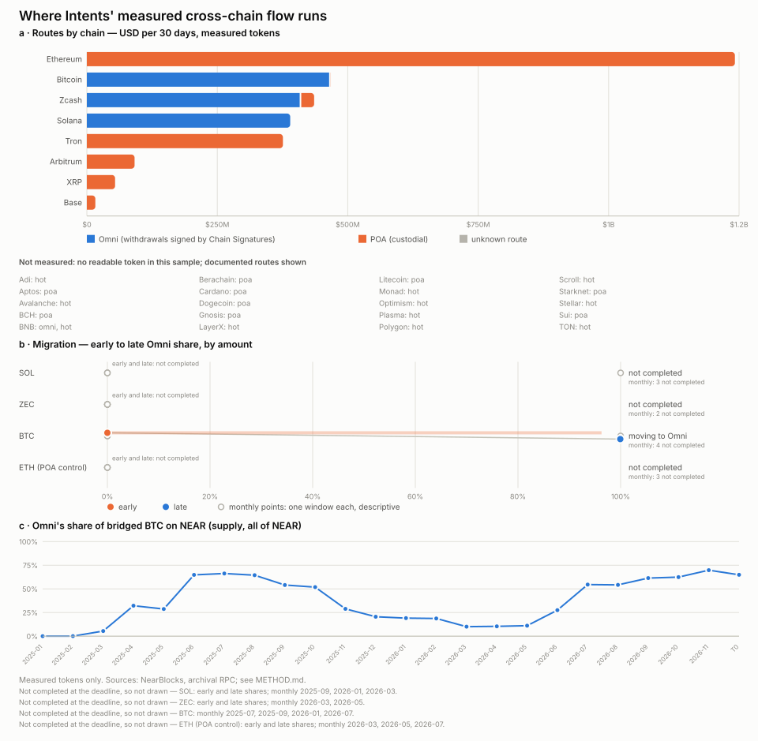
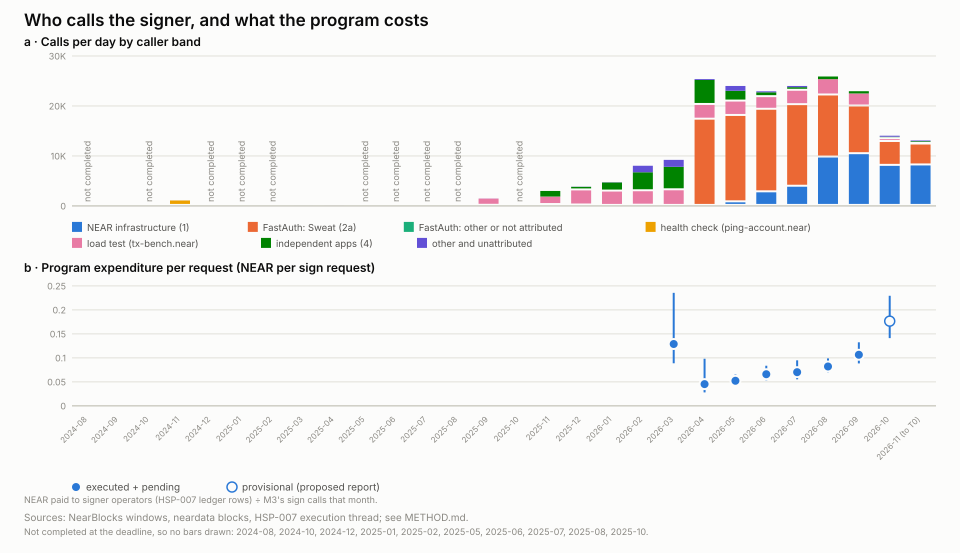

How much of NEAR's cross-chain flow needs NEAR's signer: five tests, fixed before any counted result was read.
Narrow today: the claim held on breadth. The next reads are dated. Chain Signatures is NEAR's signer. It signs the withdrawals of Omni, NEAR's own bridge. NEAR Intents is NEAR's cross-chain swap product.
On Bitcoin the flow runs on the signer's bridge. Nearly all of the bitcoin that moves through Intents moves on Omni: [99.7%, 100.0%] of it over the 90 days to T0. NEAR's own sentence about Bitcoin holds on chain.
Beyond Bitcoin it is not shown. This sample can read 8 chains, and Omni is shown to be the main route on 1 of them. On Solana and Zcash Omni carried most of the sampled flow, but the intervals are too wide to call. On Arbitrum, Base, Ethereum, Tron and XRP every sampled dollar moved on a custodial bridge that does not use the signer. Found after the read: the Intents team's own SDK lists SOL and ZEC tokens among those it now sends through Omni, and no EVM, Tron or XRP token. That is a list in its code, not a measurement of flow (THESIS.md §5).
The call count overstates adoption. The signer took 14,046 calls a day in October. 34.0% of them came from one app, Sweat Wallet, signing in through a login service, and that app ends in its present form on Dec 30, 2026. Apps beyond NEAR's own infrastructure, leaving Sweat out, made 3.5% [1.7%, 17.4%].
It is a cost, and it is not falling. The signer charges no fee. NEAR pays its operators from its treasury: 0.1065 NEAR per request in September, and by the frozen test it did not fall from July. Written after the read: at October's proposed payout the programme runs at 922,374.24 NEAR a year, equal to 2.8% of the most NEAR the protocol can issue in a year (a comparison of size, not a share of issuance; THESIS.md §7.2).
What a holder watches next. January 2027, the first full month without Sweat; October's payout, when it is executed; and the next complete reading of Solana and Zcash. Each has a threshold and an expectation, written after the read and timestamped before this page was published (THESIS.md §7.2).
The claim under test: "On the chains this sample can measure, Chain Signatures is a narrow route, not a broad one."
What was fixed, and when
All dates are 2026, UTC. The Bitcoin block times can be checked by anyone; the other times are this entry's own record.
Nov 10. The method, the list of windows and the collector were hashed and submitted to OpenTimestamps at 11:51Z, a minute before collection began. The analysis code, with the five tests in it, was hashed and submitted at 13:04Z, while collection ran and before any analysis read a collected row. Bitcoin holds both hashes in a block of 14:41Z that day. That block time is what anyone can verify; the two earlier times are this entry's own record.
Nov 10 to Nov 13, 00:00Z. Collection.
Nov 13. The claim's sentence, from a sketch dated Nov 10 that was not stamped then, and the read for a NEAR holder were stamped: submitted at 05:46Z, in a Bitcoin block at 07:25Z. That is after collection ended and before the first read of any counted result, on Nov 13 at 11:00:30Z (preread/).
The claim and the tests were both written after an uncounted pilot that their author had seen. On Nov 9, with one window per token, SOL, ZEC and BTC transfers went through Omni, and ETH, USDC on Ethereum, Arbitrum and Base, Tron USDT and XRP went through POA; and 49 of 103 sampled sign calls were Sweat's (METHOD, sections 4 and 7). That pilot had already shown five of the eight readable chains on POA and Sweat with about half of the sampled calls, so T2 and T3 could hardly have been met; it did not measure value, cost or change over time, which the other three test. So the claim was not a blind guess. What the stamps show is that the tests, their thresholds and the claim were not changed after the counted results were read.
The five tests
Each row is what a test needed against what was found. All five frozen tests read not met; none was met and none is undecided.
Test
Needed
Found
Result
T1 to T3 would have shown a broad moat.
T1. Value mostly on Omni
The lower end of Omni's share of the measured value at 90% or more.
21.1%; the share is 41.3% [21.1%, 89.5%] over the 90 days.
not met
T2. Omni dominant widely
Omni the dominant route on at least 5 of the 8 chains this sample can read.
1 of 8, Bitcoin.
not met
T3. Broad adoption
Apps beyond NEAR's own infrastructure, leaving Sweat out, making at least 25% of sign calls in each of August, September and October.
3.5% [1.7%, 17.4%] in October, and less before.
not met
T4 and T5 would have changed the read on cost and on direction.
T4. Falling spend per request
What NEAR pays per request falling from July to September while calls grow.
It did not fall, and total calls did not grow.
not met
T5. No migration
No move to Omni for SOL, ZEC or BTC.
Bitcoin moved, by the frozen test; for SOL and ZEC the comparison could not be made.
not met
What to watch, and when
Written after the read and timestamped before this page was published (afterread/NEXT-READS.md, with its manifest and receipt). Each read uses a series and a threshold frozen before the read; the expectation is this entry's own.
January 2027, the first full month without Sweat. Readable from February 2027. Threshold: apps beyond NEAR's own infrastructure make at least 25% of sign calls, with a lower end of at least 15%. Expectation: not met. If Sweat's calls stop and nothing else changes, those apps would make 5.2% of the calls that remain, and the signer would take about 9,270 calls a day; more than that means the other callers grew.
October's payout, when it is executed, and each monthly report after it. Threshold: NEAR per request falling month on month, each interval wholly below the one before, while calls grow. Expectation: not met, and higher than September's 0.1065. Paid as proposed, October comes to 0.1765 NEAR per request [0.1411, 0.2294].
The next complete reading of Solana and Zcash, at a cutoff after Dec 30, in which every SOL and ZEC window is completed. Threshold: the lower end of Omni's share above 50%, by count and by amount. Expectation: both read dominant, which would make 3 of the 8 readable chains and still fall short of the 5 the test needs.
If all three read as expected, the signer is a route that widens by chain while its use by apps outside NEAR's own stack stays small and its cost per signature rises. What keeps flow on NEAR on the other measured chains is then still Intents' own network, not Chain Signatures.
The 28 chains, one by one
The partner's report names a "28-chain moat". This is where each of the 28 stands in this sample: Omni is the dominant route on 1, seen in use on 7, and 16 cannot be read at all.
Omni is the dominant route 1 of 28
The lower end of Omni's share is above half, by count and by amount (the rule fixed in METHOD.md, M1).
Bitcoin
BTC 99.9% [99.7%, 100.0%]
census: 89 Omni legs with Intents
documented route: omni, poa
Omni seen in use, not shown dominant 6 of 28
At least one Omni transfer was seen, in the measured flow or in the census of Omni's own legs with Intents.
Aptos
census: 4 Omni legs with Intents
documented route: poa
BNB
census: 1 Omni leg with Intents
documented route: omni, hot
Polygon
census: 2 Omni legs with Intents
documented route: hot
Solana
SOL 100.0% [32.1%, 100.0%]
USD 100.0% [26.4%, 100.0%]
census: 881 Omni legs with Intents
documented route: omni, poa
Starknet
census: 2 Omni legs with Intents
documented route: poa
Zcash
ZEC 94.3% [16.8%, 100.0%]
census: 49 Omni legs with Intents
documented route: poa
Measured, no Omni transfer seen 5 of 28
Every measured transfer moved on the custodial POA bridge. The method calls Omni's place here unknown, not absent: the interval's upper end reflects how few windows were read.
Arbitrum
USD 0.0% [0.0%, 73.1%]
documented route: omni, poa
Base
USD 0.0% [0.0%, 80.2%]
documented route: omni, poa
Ethereum
ETH 0.0% [0.0%, 78.7%]
USD 0.0% [0.0%, 85.3%]
documented route: omni, poa
Tron
USD 0.0% [0.0%, 73.9%]
documented route: poa
XRP
XRP 0.0% [0.0%, 94.0%]
documented route: poa
Not read by this sample 16 of 28
No token of the chain can be read through these sources, so only its documented route is shown. Not seen is not the same as absent.
Adi
documented route: hot
Avalanche
documented route: hot
BCH
documented route: poa
Berachain
documented route: poa
Cardano
documented route: poa
Dogecoin
documented route: poa
Gnosis
documented route: poa
LayerX
documented route: hot
Litecoin
documented route: poa
Monad
documented route: hot
Optimism
documented route: hot
Plasma
documented route: hot
Scroll
documented route: hot
Stellar
documented route: hot
Sui
documented route: poa
TON
documented route: hot
Each line runs from 0% at the left to 100% at the right. The blue dot is Omni's share of the chain's measured flow by amount; the grey bar is its interval, which is wide where few windows were read. Drawn here after the counted read, from the rows of M1 in out/combined.json; THESIS.md section 2 has the same readings in words.
Chart 1. Where Intents' measured cross-chain flow runs

Written by the timestamped code and copied here unchanged (sha256 0a5424c56b960983c6e4310253f6945706eed9dcc1a4648149ef1128fd0337d9).
1aRoutes by chain
Of the value this sample measured, Omni carried 41.3% [21.1%, 89.5%] over the 90 days; on Arbitrum, Base, Ethereum, Tron and XRP none of the measured value moved on Omni.
The query behind it
GET https://api.nearblocks.io/v3/fts/<token>/txns?limit=25&before_ts=<window end>
newest first; later pages follow the API's own cursor, back to the start of each window
15 tokens on 8 chains; the windows were drawn by seed before collection began (frozen/instants.json)
A transfer's route is read from the counterparties of Intents' legs in it (METHOD.md §3). Computed by chart1_flows, m1 and m9 in analysis/measures.py.
1bMigration, early to late
Bitcoin is the one series with both readings: Omni's share of Intents' bridged BTC went from [0.0%, 96.3%] in early 2025 to [99.7%, 100.0%] in the 90 days to T0. For ETH (POA control), SOL and ZEC the comparison could not be made, because windows it rests on did not finish before the deadline, so they are not drawn.
The query behind it
GET https://api.nearblocks.io/v3/fts/<token>/txns?limit=25&before_ts=<window end>
the same call: for each series an early stratum of windows and the 90-day flow windows,
and one window in every other month for the monthly points
Computed by m10 in analysis/measures.py; the rule for readings not completed is publish/rule.py (POST-FREEZE.md).
1cOmni's share of bridged BTC on NEAR, by supply
Omni's share of all bridged BTC on NEAR did not climb steadily: 0.0% at the start of 2025, 66.3% in July 2025, 10.1% in March 2026 and 64.9% at T0. The fall is not explained here.
The query behind it
POST https://archival-rpc.mainnet.fastnear.com
query call_function ft_total_supply, block_id = the first block of each month and T0's
on nbtc.bridge.near (Omni) and btc.omft.near (POA)
A stock, not a flow, and all of NEAR, not only Intents. Computed by m10b in analysis/measures.py.
Chart 2. Who calls the signer, and what the program costs

Written by the timestamped code and copied here unchanged (sha256 12b606868d67ee1967b2e0bd9d6783c44f330adcfa8dc5c7b8a78c369240b7ca).
2aCalls per day, by who calls
sign calls ran at 14,046 a day in October 2026; the largest single caller made 34.0% of them, and apps beyond NEAR's own infrastructure, leaving Sweat out, made 3.5% [1.7%, 17.4%].
The query behind it
GET https://api.nearblocks.io/v3/accounts/v1.signer/receipts?method=sign&limit=25
in windows drawn by seed before collection began (frozen/instants.json)
GET https://mainnet.neardata.xyz/v0/block/<height>
sampled blocks, for the signer behind each FastAuth call
Each caller is classed by registry/callers.json, which gives a source for every account. Computed by m3, m4_m5 and chart2_bands in analysis/measures.py.
2bWhat NEAR pays per request
NEAR paid 0.1065 NEAR per sign request in September [0.0884, 0.1324], from emissions; from July to September the points rose but the intervals overlap, so the rise is not established.
The query behind it
inputs/hsp007-ledger.json
the rows of the HSP-007 execution thread, each with its link, saved before collection began
÷ the month's sign calls, from the receipts query of panel 2a
Computed by m8 in analysis/measures.py with analysis/hsp007.py.
NEAR paid per sign request, 2026 (executed plus pending)
Month
As charted (testnet rows pooled in)
Mainnet rows only
June
0.0659
0.0622
July
0.0702
0.0618
August
0.0820
0.0782
September
0.1065
0.1065
The sample, and how to rebuild all of this
490 of 526 windows read in full
The windows were drawn by seed, and their list was hashed before collection began. A reading that rests on a window that did not finish is marked "not completed" and is never drawn as if it were known. Data cutoff (T0): 2026-11-10T11:00:00.000000Z.
Family of windows
Read in full
Not finished
census
48
0
flow
192
0
index
11
2
migration
57
18
sign
182
16
Two commands, offline
python3 -I rebuild.py data --draft
python3 -I publish/written.py data
The first recomputes every number, table and chart from the saved rows. The second fills THESIS.md, checks it against the results, and writes this page. Neither makes a network call. When they worked: